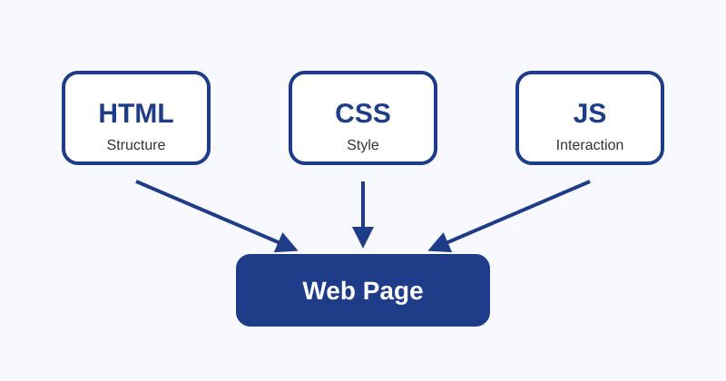

Why Web Development Matters
Web development is important because it is one of the main ways people share information, create businesses, and build useful tools online. A web page may look simple in the browser, but it is usually made from several parts working together. HTML gives the page structure, CSS controls the presentation, and JavaScript can add interaction. Learning these pieces in order helps a beginner understand how websites are built instead of only copying code. This assignment is a good first step because it focuses on clean file organization, meaningful content, readable formatting, and basic validation. Those habits matter because larger websites become difficult to maintain when files are messy or code is not documented. Even a small page should have a clear purpose, working links, headings, paragraphs, images, and styling that makes the content easier to read. Good web pages are not only about decoration; they should also be organized, understandable, and useful for the person visiting the site.

Helpful Tools for a Beginner
A beginner does not need complicated software to start building websites. The most important tools are a code editor, a browser, and a place to save and publish the project. The table below lists a simple starter setup.
| Tool | Purpose | Beginner Benefit |
|---|---|---|
| Visual Studio Code | Writing and organizing code | Shows helpful hints, errors, and extensions |
| Google Chrome or Firefox | Testing the website in a browser | Includes developer tools for checking layout problems |
| GitHub | Saving project history and publishing with GitHub Pages | Makes the page available through a public web address |
| W3C Validators | Checking HTML and CSS for mistakes | Helps confirm that the code follows web standards |
Useful Resources to Browse
These links are useful for learning more about front-end development and for checking whether this assignment follows basic web standards.
Reflection
This page uses several common HTML elements, including headings, paragraphs, a table, links, and an image. It also uses HTML entities such as <h1>, <p>, &, and © to show symbols that may otherwise be interpreted as code. Keeping the CSS in a separate folder also makes the project easier to update later. For example, changing the colors or spacing can be done in one stylesheet instead of editing every section of the HTML file.